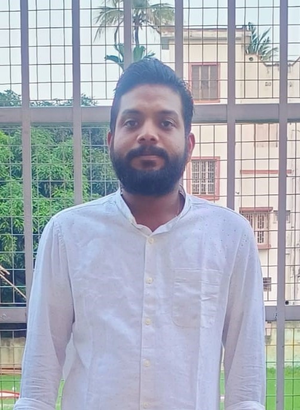
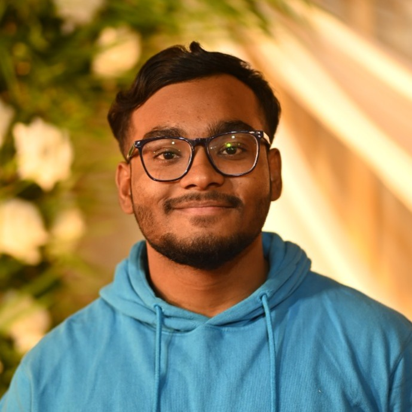
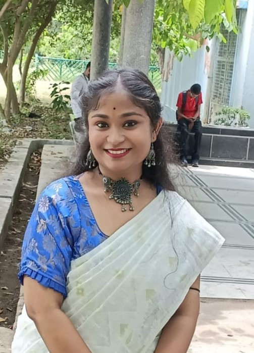
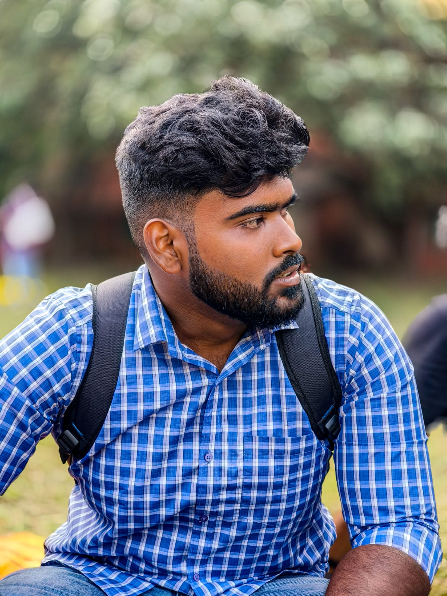
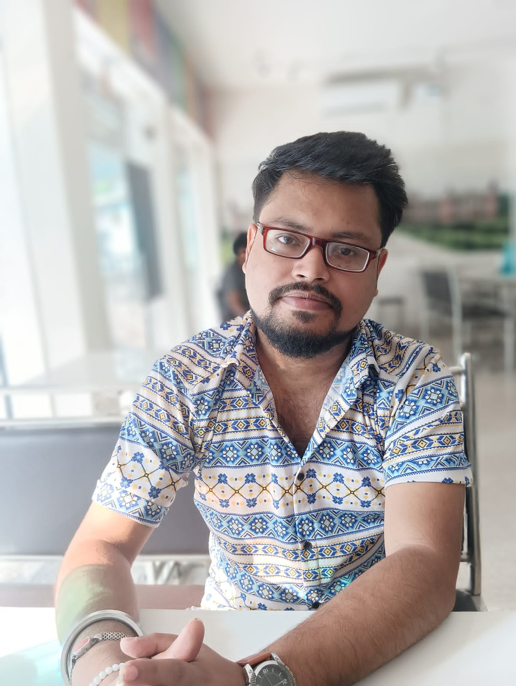
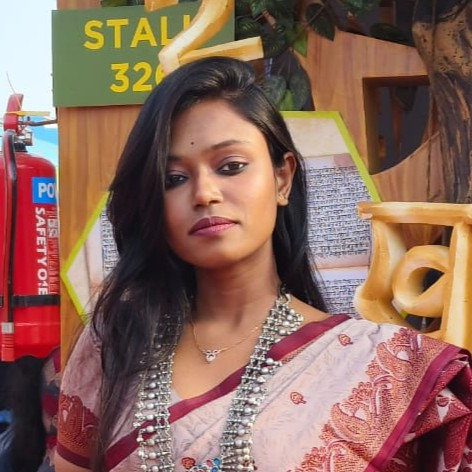
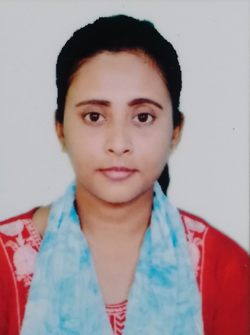
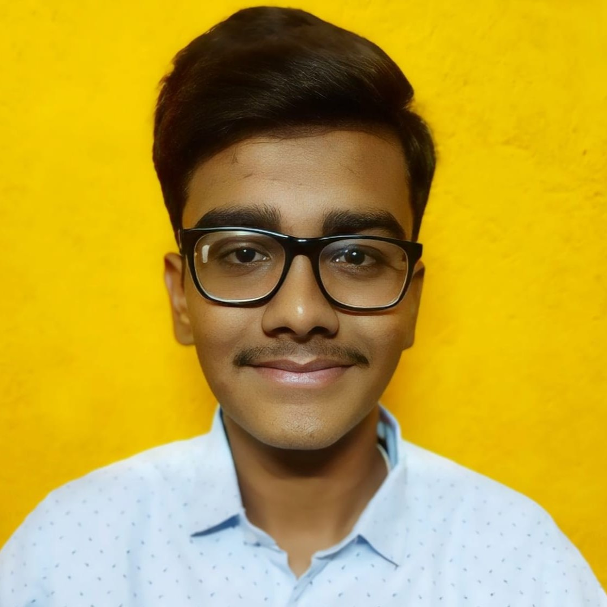
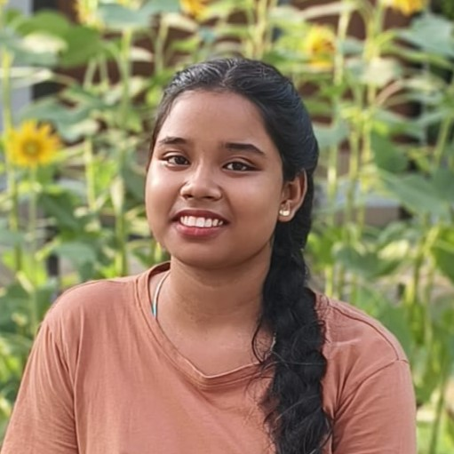

| Name | Subject | Qualification & Experience |
|---|---|---|
|  Jyotirmoy Sir | Physics, Mathematics | Head of The Institute |
| Nishanka Sir | Computer Science | M.Sc in Computer Science from Ramakrishna Mission Vivekananda Educational and Research Institute, Belur associated with Indian Stastical Instituite, Kolkata B.Sc. (Hons) in Computer Science from Ramakrishna Mission Vivekananda Centenary College, Rahara I. 2 years+ teaching experience II. Quantum Computing Research Intern at AKCSIT, University of Calcutta III. Qualified National Level PG exams with AIR - 1419 and AIR 7 |
|  Kunal Sir | Computer Applications | BCA from Techno India Kolkata Alumuns Rahara RKM Boys' Home High School Experience - 2 years of teaching experience. |
| Name | Subject | Qualification & Experience |
|---|---|---|
|  Reniya Madam | Geography |
Qualification - B.sc (Hons) in Geography Diploma in Disaster Management |
|  Debraj Sir | Bengali | Educational Qualification:- BA Alumuns Rahara RKM Boys' Home High School (X & XII) Experience - 8 Years of teaching experience |
| Trayee Madam | Communication English | Educational Qualification:- MA Experience - 5 Years of teaching experience |
|  Spandan Sir | History & Hindi |
Qualification:- Central Board of Secondary Education (CBSE), Bachelor in Arts (History), Masters in Psychology. Experience:- Teaching Experience of 7 years . |
|  Ankita Madam | English |
B.A (Hons) in English from Calcutta University M.A in English from Rabindra Bharati University B.Ed Experience: Teaching Experience of 10 years . |
|  Priyanka Saha | Sanskrit |
B.A. in Sanskrit from Vidyasagar College Experience: Teaching Experience of 5 years . |
| Rittika Madam | Philosopy |
B.A. in Philosopy M.A. in Philosopy Experience: Teaching Experience of 4 years . |
|  Abir Sir | Political Science |
B.A. in Political Science from Vidyasagar College (Calcutta University) Experience: Teaching Experience of 2 years . |
| Name | Subject | Qualification & Experience |
|---|---|---|
| Pritthish Sir | Economics | MBA B.Com. Hons in Accounting & Finance Teaching Experience - 4 years |
| Kousik Sir | Commerce | Qualification: B.com in Financial Accounting Guest lecturer in Natagarh high school (H.S) Experience: 9 years of private session |
| Name | Subject | Qualification & Experience |
|---|---|---|
| To be Announced Madam | NA | B.Com |
|  Ritika Madam | NA | B.A. |